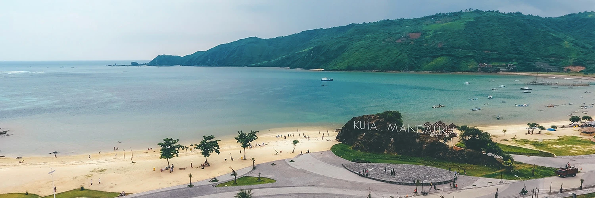

Mandalika: The Ultimate Paradise in the Heart of Lombok

Along the south coast of the beautiful Lombok island lies a long and wide stretch of beautiful white sand beach facing the glistening Indian Ocean. On the background are lush green hills and mesmerizing landscapes. This is Mandalika, once a surfers’ best-kept secret, now it has emerged as the island’s capital of leisure. Mandalika shouts heaven from all of its enchanting corners.
The special tourism economic zone boasts vibrant bars and nightclubs, thrilling racing circuits,
exciting water parks, luxurious hotels and resorts, fascinating golf courses, rejuvenating spas,
and plenty more; there’s everything for everyone at this 1,250-hectare paradise. The tourism
industry in Mandalika is equalling its neighboring island, Bali. Mandalika is also a melting
pot of tourists from all parts of the globe. Here, the tourism industry fused seamlessly with
the unique and colorful culture of the local people that is still well preserved for generations.
TMandalika is also conveniently located near some of Lombok’s most outstanding beaches. These
include Tanjung Aan, Kuta, Gerupuk, Serenting, and Seger Beach. From the top of the Merese Hill
and Batu Payung Beach, you are presented with some of the most amazing panoramas of Lombok. All
kinds of fun water sports activities await at Kuta Beach. Those who enjoy swimming, surfing,
and fishing can head to Gerupuk Beach, while those who prefer peace and serenity can head to
Serenting Beach. For a one of a kind cultural experience, head down to Seger Beach during the
annual tradition of Bau Nyale Ritual and join in the local festivity you won’t find elsewhere.
Blessed with beautiful nature and enhanced by the hands of professionals, Mandalika is designed to make your dream vacation a reality. With all its exceptional splendors, a trip here will be unforgettable and will make you long for more.
Get Around
Getting around in this area is quite simple. A public transportation vehicle called Bemo runs all over Lombok including Mandalika, and it will get you to most places. You can also rent a car, a motorcycle, or a bicycle. However, since most of the facilities in the area are within walking distance, you can simply walk or stroll as you enjoy the vibe.
Get There
From Singapore and Malaysia, you can take a direct flight to Lombok International Airport, which is located not too far from Mandalika. Flights are also available from various major cities in Indonesia such as Jakarta, Surabaya, and Bali. From Jakarta, the flight will take about 2 hours, while from the nearby Bali, it will only take about 30 minutes. From Bali, you can also take a ferry from Padang Bai Harbor to Lembar Harbor in Lombok. From there you can take a bus or a taxi to Mandalika that will take about 2-3 hours.